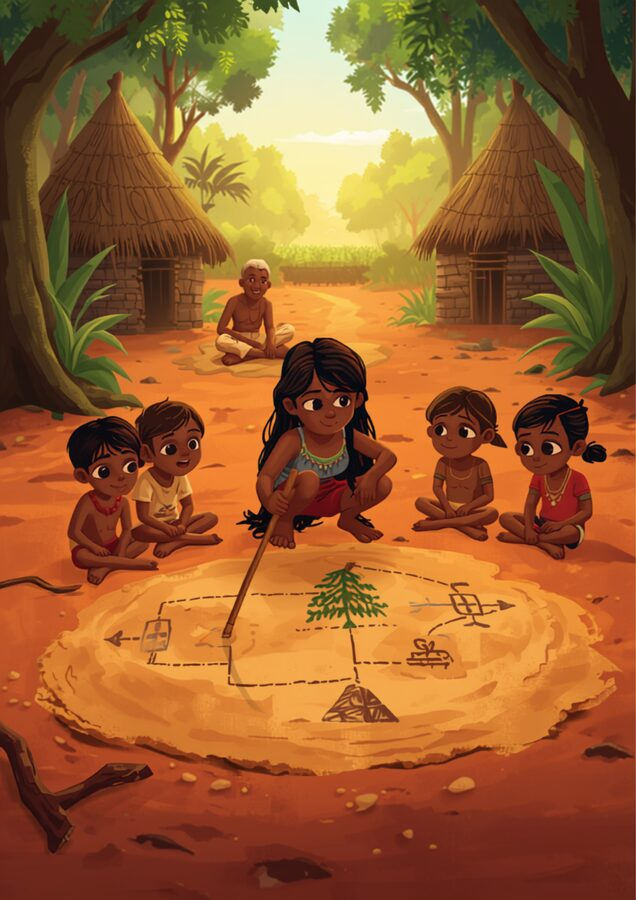

🧭 O caminho do rio de Potira
Na Aldeia Kurisevo, a jovem Potira, do povo Kalapalo, ajuda sua mãe a organizar o caminho até a roça de mandioca. Para ensinar os irmãos mais novos a irem e voltarem em segurança sem se perderem na floresta, Potira desenha um "mapa de passos" na areia do chão.
"Primeiro, nós andamos até a árvore grande. Se o caminho estiver seco, seguimos em frente. Se tiver muita água da chuva, viramos à direita", explica Potira, apontando para os símbolos geométricos que desenhou na terra com o auxílio de pequenos gravetos.
O avô de Potira passa por perto e sorri ao ver a inteligência da neta. Ele explica que organizar as tarefas em etapas claras — onde uma decisão leva a uma ação lógica — é um saber antigo que o povo usa para planejar as colheitas, as pescarias e as grandes festas da aldeia. Potira percebe que, ao criar regras organizadas de "se acontecer isso, faça aquilo", ela está criando um caminho perfeito e seguro, assim como os computadores fazem para resolver problemas!

🗺️ Algoritmo e fluxograma
Um algoritmo é uma sequência finita e ordenada de instruções que resolve um problema. Um fluxograma é uma forma de desenhar esse algoritmo usando setas e formas — cada forma tem um significado:
Veja o fluxograma completo para construir um triângulo qualquer, com régua e compasso, conhecendo as medidas dos três lados (a, b e c):
✏️ Vamos treinar
🖐️ Simulador de construção
Digite as três medidas do seu triângulo e clique em "Próximo passo" para ver o algoritmo acontecendo de verdade, um passo de cada vez.
Digite os lados e clique em "Verificar" para começar.
Missões
📜 A receita da sua família ou cultura
Toda receita de cozinha, técnica de tecelagem ou construção tradicional é, no fundo, um algoritmo: uma sequência de passos que precisa ser seguida na ordem certa para dar certo.
Descreva um "algoritmo" do seu dia a dia, passo a passo
Escreva o "algoritmo" numerando os passos em ordem. O que aconteceria se alguém trocasse a ordem de dois passos?
✅ Antes de seguir em frente
Marque com sinceridade. Isto não vale nota — é um mapa para você (e seu professor) saberem onde reforçar.
🎮 Monte o Fluxograma
Os passos do algoritmo estão embaralhados. Clique neles na ordem certa para montar a sequência!
Monte a sequência de construção: